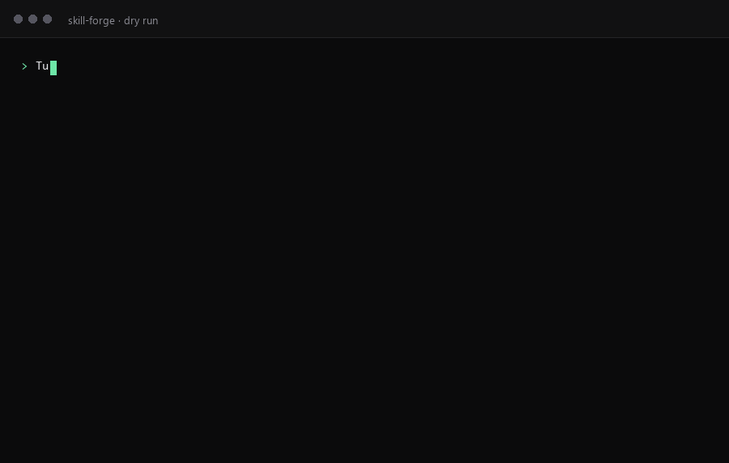

Agent Skill
Most skill tools start from a blank page and ask you to describe the workflow. Skill Forge starts from what you already ran — git history, terminal output, project files — and refuses to write a step it cannot trace to evidence.
npx skills add YaBoom/skill-forge -s skill-forge -g
Works on Claude Code, Codex, Cursor and 80+ hosts. Other install paths →

1. Check whether the canonical and mirror directories match 2. If they differ, copy canonical into the mirror 3. Verify the sync succeeded
No command. No exit condition. Every step has to be improvised at runtime.
$ python scripts/sync_mirror.py --check drift: SKILL.md $ python scripts/sync_mirror.py synced plugins/skill-forge/... -> skills/... $ python scripts/sync_mirror.py --check mirror is in sync
Five steps, each with a command and a machine-checkable exit condition.
Left is the shape of a description written from memory. Right is the actual output of
examples/sync-skill-mirror, a 103-line skill in this repository.
| Gate | Score | Evidence |
|---|---|---|
| Trigger precision | 2/2 | 3 positive triggers, 1 exclusion |
| Progressive disclosure | 2/2 | 103 lines, nothing inlined |
| Token budget | 2/2 | ~890 tokens |
| Executability | 2/2 | 5 steps, all with exit conditions |
| Evidence anchoring | 2/2 | Script source and two real runs |
| Safety | 2/2 | Mirror only, no source deletion |
| Portability | 2/2 | No absolute paths |
| Provability | 2/2 | 5 positive + 3 negative trigger tests |
A skill can pass all eight and still solve a problem nobody has. The gates are a quality floor, not a product strategy.
description is the only thing a host sees before loading a skill. If it only says
what the skill does, the host has to load it in every superficially similar situation.
A skill that should not have fired does not usually error — it does something plausible,
reports success, and you find out later.
We scanned 275 installed skills across four host directories.
15 of them declare a negative trigger. The script that produced this number is in the
repository as scripts/survey_triggers.py — run it on your own machine and the
number will move.
npx skills add YaBoom/skill-forge -s skill-forge -g
Installs into the current host's skill directory. Drop -g for a project-scoped install.